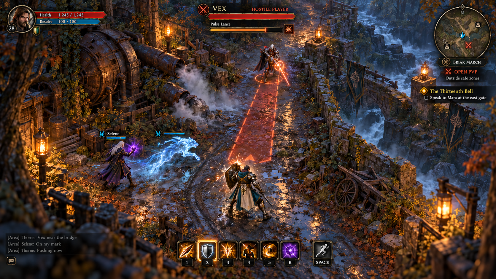

The price of a red name.
One item for a kill. Two from an outlaw. Town guards and merchants now make aggression matter beyond the fight.
PvP direction agreed · supporting defaults proposedThe PvP design now puts real possessions at stake. A player kill allows one eligible item to be looted; a red-name victim exposes two. This replaces the original proposal that all equipment stayed safe on death.


Starting unlawful aggression turns a name red. Guards pursue visible red players, and merchants refuse their business. Towns still prevent player damage, while guard NPCs can enforce the law. Existing realm shrines provide unpatrolled refuges so an outlaw can respawn without an endless guard death loop.
The proposed timer is ten minutes after aggression and sixty minutes after an unlawful kill, measured in connected playtime. Logging out pauses it, and dying does not clear it. Self-defence and hunting an already-red player are proposed lawful actions.
Equipped gear is included in the proposed loot pool, with quest essentials and basic starter equipment protected. Killer-selected loot is the provisional selection rule. The server must enforce a single corpse allowance and durable ownership transfers, including interrupted claims and reconnects.
The broader game direction is accepted. Quality and fun guide the next stage: consistent visual references, then real browser proof before bulk production. No paid asset generation or game build has started.